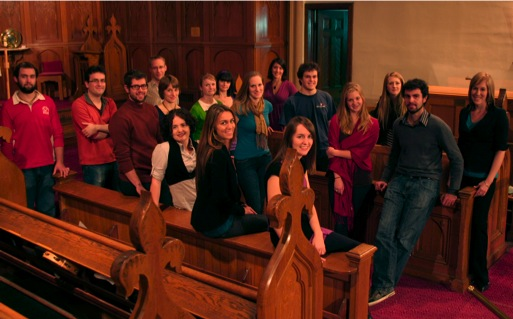

Interested in joining us? 2011-2012 Audition Info now available!
Capital Chamber Choir
Welcome!
The Capital Chamber Choir is a newly-founded ensemble of 20-24 voices from the downtown Ottawa area. We are a group of musicians of various professions, with both current students and graduates of the University of Ottawa.
The ensemble's musical focus is on Canadian choral repertoire. In addition to its dedication to presenting compositions familiar Canadian composers, the choir works toward promoting newly-composed works by Ottawa-based artists.
In its inaugural concert of May 2009, the ensemble brought to its audience perspective on the volume of available Canadian choral repertoire in presenting works by R. Murray Schafer, Imant Raminsh, Eleanor Daley, Mark Sirett, Stephen Chatman, John Estacio, Donald Patriquin, Stephen Hatfield, and Healey Willan.